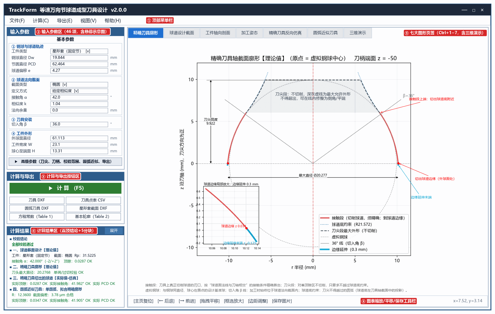
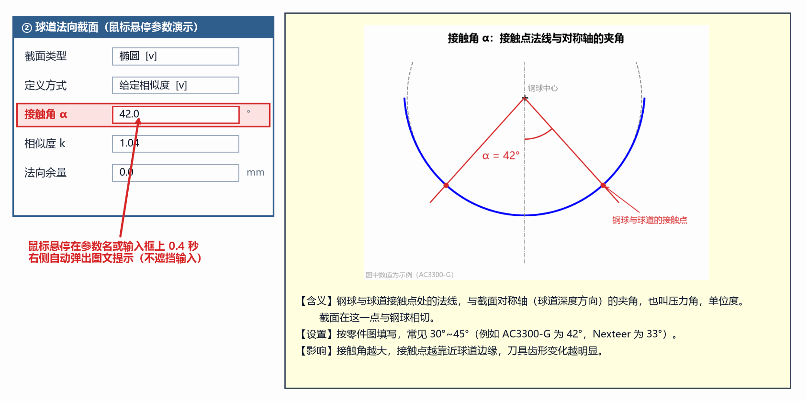
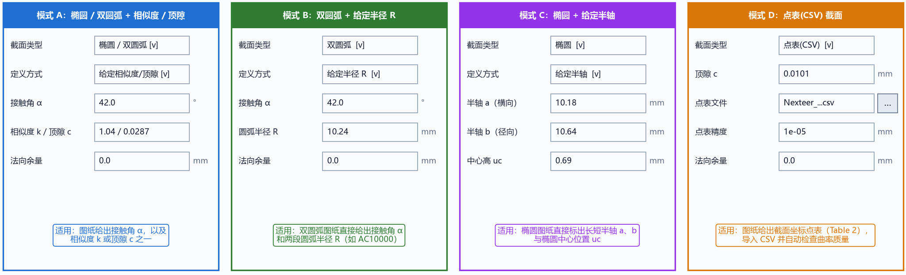

界面布局与基本操作
TrackForm 采用直观的“左控右图”工程界面布局：
- 左侧控制区：集中完成 46 项参数输入、一键计算触发、6 类文件导出与结构化数值结果核对；
- 右侧图形区：通过 7 个专业图形页签（含 OpenGL 硬件加速三维演示），全方位展示刀具廓形、球道截面、零件剖面、加工姿态、反向落座仿真、圆弧近似误差与三维加工动画。

1. 六大功能分区概览
对照上图中的红色编号徽标，主界面分为以下六个区域：
| 区域编号与名称 | 核心功能与操作说明 |
|---|---|
| ① 顶部菜单栏 | 包含 文件(F)、计算(C)、导出(E)、视图(V)、帮助(H) 五大菜单： • 支持参数载入/保存、按工件类型分组的内置示例调用（如星形套 AC3300-G_星形套_参数；内部版另附 AC10000_星形套_参数、Nexteer_34205673_星形套_参数、AC0706-E_星形套_参数 及斜筒形壳 EVL12508M.0F2-1_斜筒形壳_参数）与恢复默认设置；• 提供结果窗口展开、高级参数折叠、页签切换（ Ctrl+1 ~ Ctrl+7）、打开在线手册与数据文件夹等入口。 |
| ② 输入参数区 | 按 参数名称 / 输入框 / 单位 三列整齐排列，全软件共 46 项工程参数：• 上方为决定齿形的 基本参数（4 个分组，21 项，含 工件类型 与 球道斜角 γ）；• 下方为可展开/折叠的 ▸ 高级参数（6 个分组，25 项）； • 面板高度自适应，支持鼠标滚轮平滑滚动且自动防误改下拉框。 |
| ③ 计算与导出区 | • 顶部为醒目的绿色 ▶ 计算 (F5) 大按钮（计算期间右侧图形区自动显示进度遮罩与旋转圆弧）； • 下方为两列排布的 6 个导出按钮（一键导出 3 种 DXF 图纸与 3 种 CSV 表格）。 |
| ④ 计算结果区 | • 顶部置顶显示 ■ 校验结论（全部校验通过 或标红汇总所有超差/干涉警示项）；• 下方按 ■ 一 ~ ■ 五 五大分块输出【理论值】与【实际值·仿真】（含钢球实际落座指标、工件与刀具干涉校验、刃口四分段）；• 点击标题栏右侧 ⤢ 展开（或双击文本框）可在独立宽窗口中以四列对齐斑马纹表格查看，支持 Ctrl+F 查找与一键复制粘贴到 Excel。 |
| ⑤ 七大图形页签 | 包含 精确刀具廓形、球道设计截面、工件轴向剖面、加工姿态、精确刀具反向仿真、圆弧近似刀具 与 三维演示 共 7 个页签： • 支持鼠标点击或快捷键 Ctrl+1 ~ Ctrl+7 快速切换；• 2D 页签交互：支持滚轮以光标为中心缩放、左键/中键拖动平移、左键双击复原（多子图与内嵌放大窗各自独立操作）； • 子图放大查看：悬停任意 2D 子图右上角浮现 ⤢ 展开按钮，点击可铺满大窗口（Esc / ✕ / 点暗处关闭）；• 3D 三维演示页签：支持左键旋转视角、右键平移、滚轮缩放、左键双击复原、模式切换与连续/逐帧摆动播放。 |
| ⑥ 图表导航工具栏 | 位于每个 2D 图形页签底部（第 7 页签三维演示配有专属播放与视角控制栏）： • 提供主页复位、前后视图回退、拖拽平移、框选放大、边距调整与单张图片保存； • 右侧实时显示鼠标所在位置的精确工程坐标 (x, y)。 |
2. 四项高效交互设计
（1）鼠标悬停查看“参数示意图 + 说明卡片”
填写参数时若对某个尺寸定义或图纸位置不确定，将鼠标指针悬停在参数名称或输入框上约 0.4 秒，右侧即会弹出图文提示卡片：

- 随
工件类型实时切换示意图：上方几何图由后台按您当前选定的工件类型（固定节星形套 / 钟形壳、DO 直球道、VL 斜球道等）真实绘制，并用红色（#d62728）精准标出该参数位置； - 下方三段式说明：
- 【含义】：物理定义、正负号约定与单位；
- 【设置】：如何对照零件图填写及常见数值范围；
- 【影响】：修改该参数对刀具齿形、外形干涉或校验结果的影响；
- 不遮挡输入：固定在参数栏右外侧，点击打字或移开鼠标自动收起；下方 6 个导出按钮同样支持悬停提示。
（2）参数智能显隐与文案自动适配
- 按
工件类型自动适配：切换工件类型（共 6 种：星形套（固定节）、钟形壳（固定节）、星形套（DO 直球道）、筒形壳（DO 直球道）、星形套（VL 斜球道）、斜筒形壳（VL 斜球道））时：- 外形参数名称与说明自动切换为对应结构尺寸（如
外球面直径 / 内球面直径 / 内孔直径、工件宽度 W / 球道有效长度 L、球心至端面 H / 系统面至开口端面 H），导出按钮文字同步变为<零件名>截面 DXF； - 仅在适用的工件类型下显示专用参数（例如
球道斜角 γ仅VL 斜球道显示，内孔直径仅内圈星形套显示，球道偏移在圆柱内孔外圈下隐藏）； - 注：当前客户发行版完整开放
星形套（固定节）；选其余“开发中”类型点击计算时将提示“<类型>”尚在开发中，当前版本只支持“星形套（固定节）”。。
- 外形参数名称与说明自动切换为对应结构尺寸（如
- 按
截面类型与定义方式切换：在② 球道法向截面分组中，自动隐藏无关输入框，只保留当前模式所需项：

- 在
▸ 高级参数 → 圆弧近似分组中：- 当
圆弧段数 = 1（单圆弧）时显示单圆弧求法（拟合精确廓形/按审核优化）； - 当
单圆弧求法 = 按审核优化时，进一步显示审核优化目标（贴合设计截面/审核范围硬约束/审核范围中值）； - 当
圆弧段数 = 2 ~ 5（多段相切圆弧）时，自动隐藏单圆弧专属选项。
- 当
（3）贴心的输入容错与防误触设计
- 中英文小数点自动兼容：在中文输入法下不小心将小数点打成中文逗号
，或英文逗号,（如19，844），计算时会自动识别为标准小数点19.844。 - 滚轮防误改下拉框：在左侧参数区滚动鼠标滚轮时，即使光标经过下拉选择框，也只会滚动面板而不会误改动下拉框选项。
（4）清晰的计算进度遮罩、置顶结论与防呆保护
软件通过图形区遮罩与结果栏顶部的 ■ 校验结论 实时反馈计算与合格状态：
- 启动或载入参数后不自动计算（防误导出旧结果）：启动软件、载入参数文件或示例参数后，右侧图形区清空并提示
已载入参数：... 请点击左侧“计算”按钮（或按 F5）重新计算，避免误导出旧结果。 - 后台计算图形区暗色遮罩：点击计算后，右侧图形区显示半透明暗色遮罩、旋转圆弧与阶段提示（如
正在按审核优化单圆弧…已试算 40 次），界面流畅不卡顿。 - 未重算与异常导出双重弹窗防呆：若修改参数后尚未重新计算，或当前结果存在标红报警/工件干涉警告，点击导出按钮时均会弹窗提醒确认。